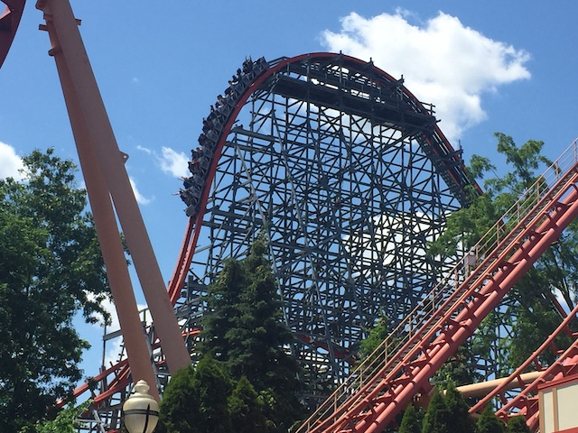
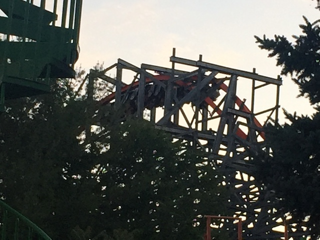
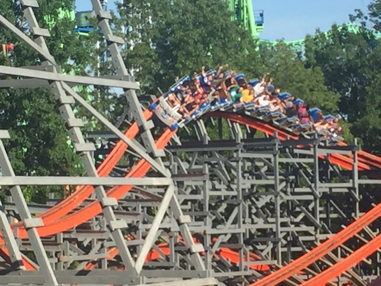
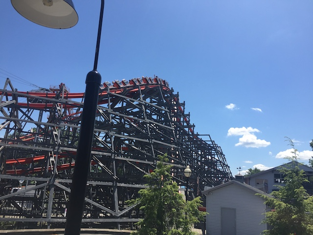
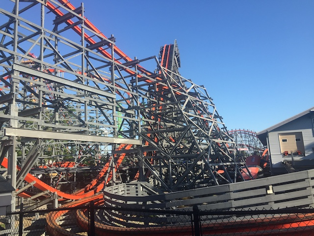
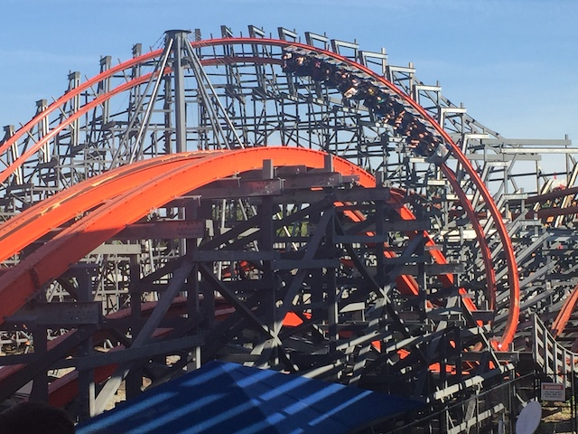
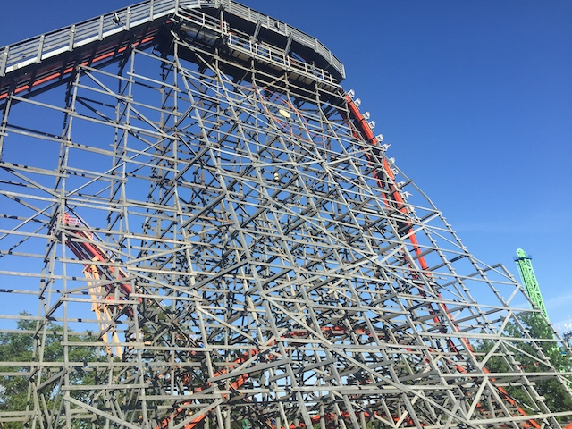
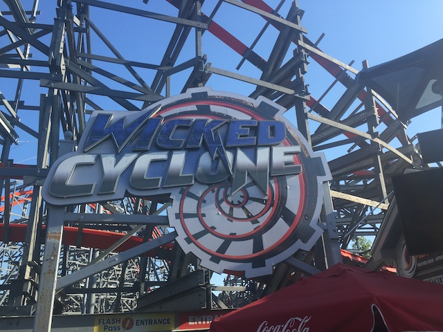

| |
Wicked Cyclone Review

Today at Incrediblecoasters, we're going to be reviewing Wicked Cyclone at Six Flags New England, which is yet another example of RMC doing their magic where they take a crappy old wooden coaster and turn it into a kickass steel coaster. And while I didn't hate the original Cyclone here (Got my own review of that if you want my thoughts on the ride it replaced), it is VASTLY inferior to Wicked Cyclone, which really does kick ass and is one of the better RMCs (though they really were all good. Even the worst RMCs are still very fun rides). All right. Let's hop in the cars, buckle the seatbelts, pull down the lap bars, and then we're off. Go through some straight track, around a turn, and head up the lifthill. This is surprisingly steep. Yeah, this isn't nearly as cool as the vertical lifts, but it is true that the steeper the lifthill is, the more enjoyable it is. Yeah. The lifthill here is relatively steep, and as such....actually kind of fun. But that's just the lifthill. Get your view in of the ride, and now let's really have some fun. We rise up to the top, yeah. It's not that high, but it still looks like a lot of fun. And we head down the first drop. It may not be huge, but this little sucker packs a punch with a nice pop of ejector air and gives us some speed. Head around an overbanked turn, and of course, this thing has some whip to it, just like its brother, Superman. None of that pussy speed-killer overbanks like those on Millenium Force and Xcelerator. So yeah. This is going really well so far. Go through a tiny little hill. BOOM!!! EJECTOR AIR!!! Now it's starting to really feel like an RMC. And speaking of which, time for the first inversion. A Zero G Roll. This thing manages to have both whip and hangtime, something that most coasters don't have. Most have to pick between one or the other. But Wicked Cyclone, while not a master at either here, is having its cake and eating it too. We then head over another 90 degree banked turn. Relatively tame by RMC standards, but this is still really good, giving us some laterals and even a tiny little bit of airtime. Though we'll get a lot more as we rise up and then head into a double down. Sure, it may not be quite as amazing as other double downs, but this still has a really nice pop of ejector air. And the next hill is even stronger. Sure, it's not as strong as the "It Happens" Hill on Suoerman, but this is still really strong. We then head up into another sort of banked turn, giving a nice little bit of whip and even some airtime. It then goes through a tiny little outer-banked hill, which really catches you off guard, giving you both laterals and airtime, always a winning combo. We then come out of the support structure and dive right down to the ground, giving the ride even more speed. And though this ride isn't the fastest, it never gives up the speed it does have, making it feel faster than it really is. And of course, you then head into another Zero G Roll. This one isn't too particuarly crazy, but Zero G Rolls always are fun elements, and this one does have some whip to it. Head up into another airtime hill, giving you another pop of airtime, though this one isn't quite as strong as before. It's still really good though. We then go back under the structure yet again, giving uis some good headchoppers as well as a couple banked turns that still give us some good laterals. You then go through another tiny airtimje hill, which might as well just be a nice clunk and jolt of airtime. We then head into a barrel roll, which is always fun. And the fact that we're so low to the ground makes this even better, again, giving us some cool headchoppers, especially when combined with the supports from the ride right above us. Head up into another banked airtime, which....SWEET!!! EJECTOR AIR!!! And we then start turning around, all accompinied with banked airtime hills. So we got quite a nice helping of ejector air. Pop out of the structure, rise up and glide right into the brake run. DAMN!!! This ride is GOOD!!! If you're someone dismissing out of hand due to its small size, then you'll be blown away. However, if you're a coaster enthusiast, then you know about RMC's amazing reputation, and that this ride tends to get a ton of really positive reviews since....it's a really good ride (this is yet another positive review under Wicked Cyclone's belt). It may not be the craziest ride or the best RMC, but it is just a damn good ride and a ton of fun. Highly recommend riding it when at Six Flags New England.
9/10
Location: Six Flags New England
Opened: 2015
Built by: Rocky Mountain Coasters
Last Ridden: June 13, 2021
Wicked Cyclone Photos








Home
|